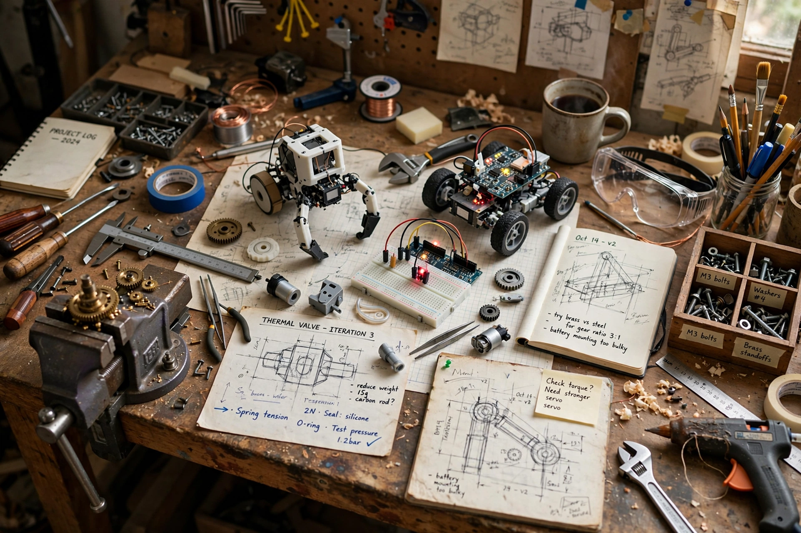

An invention is a unique or novel device, method, composition of matter, or process. An invention may be an improvement upon an existing technology or a wholly new creation. If an invention is sufficiently novel, it may be protected by a patent, which grants the inventor a temporary exclusive right in exchange for public disclosure. Invention differs from discovery: a discovery finds something that already existed in nature, while an invention creates something that did not previously exist — though the boundary is contested in fields such as biotechnology and software.
Invention typically combines existing knowledge in a new way, often in response to a recognised need. Accounts of famous inventions — the telephone, the light bulb, the airplane — emphasise long experimentation and incremental refinement rather than a single "eureka" moment, though sudden insight is also documented (Archimedes' bath, Kekulé's dream of the benzene ring). Inventors range from independent individuals to corporate and university research teams; the lone inventor remains culturally prominent but accounts for a shrinking share of patents.
Inventions may be products (a new machine or material), processes (a new method of manufacture), or improvements. Some are "breakthrough" inventions that found industries — the steam engine, the transistor, the World Wide Web — while most are incremental. Invention must also be distinguished from innovation: innovation is the successful introduction of an invention into use or the market, and many inventions are never commercialised.
For a patent, an invention must generally be novel, involve an inventive step (be non-obvious), and be capable of industrial application (useful). Legal systems differ on whether the inventor is the first to invent or the first to file; most of the world, and the United States since the America Invents Act of 2011, uses first-to-file. Patent rights are not absolute: governments may authorise use without the inventor's consent through a compulsory license, and the ornamental aspects of an invention may instead be protected by an industrial design right.
Multiple independent invention is common: calculus (Newton and Leibniz), the telephone (Bell and Gray, who filed on the same day), oxygen and evolution by natural selection (Darwin and Wallace) were all developed nearly simultaneously by different people. Sociologists such as Robert K. Merton took this pattern as evidence that inventions are substantially products of their scientific and technological moment — when the preconditions accumulate, the invention becomes, in some sense, inevitable.
See also: Patent, Innovation, Industrial design right, Compulsory license.